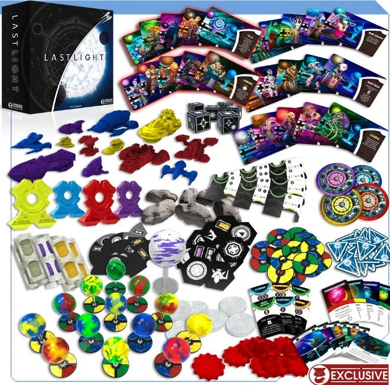
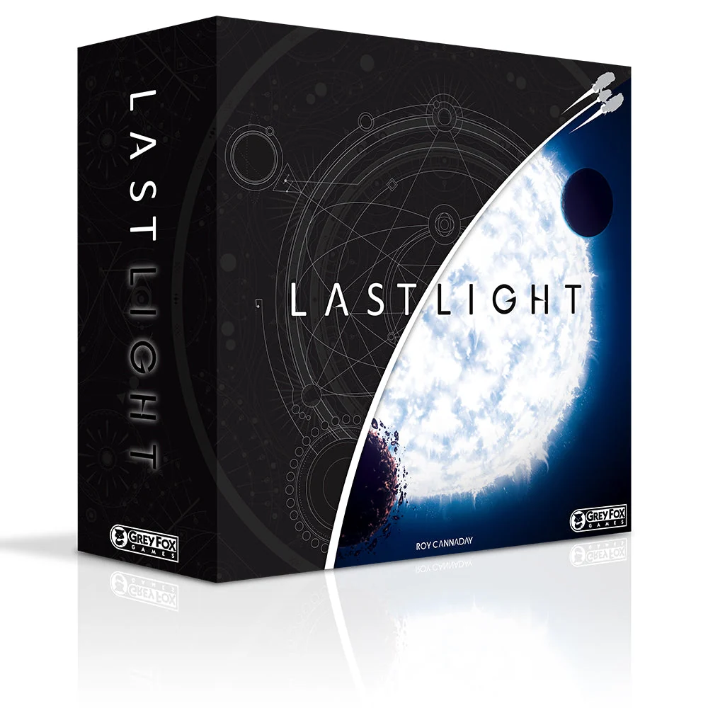

Resumo em 30 segundos
Destaques
- Ninguém espera a vez
- O tabuleiro que gira
- A carta Renovar é o coração
Atenção
- Uma hora, com asterisco
- 4X, com um X a menos
- Facções e tecnologias desiguais
Para quem: quer briga espacial sem passar a noite inteira na mesa; odeia esperar a vez dos outros.
Como funciona Luz Final
Escolha ações em segredo, revele junto com todos e corra para juntar 20 de Luz enquanto o tabuleiro gira.
- 1
Escolha em segredo
Todos escolhem uma carta de ação ao mesmo tempo: pesquisar, minerar, construir, comerciar, comandar ou renovar.
- 2
Revele junto
As cartas são reveladas e as ações acontecem em paralelo. Ninguém espera a vez de ninguém.
- 3
Expanda e ataque
Construa naves e extratores, colete recursos e use o Comandar para mover e atirar em quem estiver ao alcance.
- 4
Gire o universo
Quando todos já jogaram Renovar, os dois anéis giram e levam planetas e naves; quem está no centro ganha Luz.
- 5
Chegue a 20 de luz
O primeiro a juntar 20 de Luz dispara o fim, e vence quem tiver mais Luz na mesa.
Ler as regras completas
Cada jogador comanda uma facção alienígena que corre para juntar Luz antes da morte térmica do universo. Quem chega primeiro a 20 de Luz dispara o fim do jogo, e vence quem tiver mais Luz.
Todos têm o mesmo conjunto de cartas de ação: Pesquisar (tecnologias e melhorias de nave), Minerar (recursos dos extratores), Construir (naves e extratores), Comerciar (trocar recursos), Comandar (mover e atacar) e Renovar, que devolve à mão as cartas já usadas. A cada vez, todos escolhem uma carta em segredo e revelam juntas; as ações acontecem ao mesmo tempo, sem fila de turnos.
O tabuleiro tem dois anéis em volta de uma anã branca, com planetas em 3D presos em hastes. Quando todos já jogaram a carta Renovar, a rodada termina: o anel interno gira um quarto de volta e o externo, um oitavo, levando planetas, naves e extratores juntos. Quem tem nave no centro ganha Luz nesse momento.
A Luz vem de vários lugares: extratores em planetas, naves perto da estrela central, cartas de pesquisa e combates. No Comandar, a nave move e ataca quem estiver ao alcance; naves grandes rolam três dados e pequenas, um. Quem não jogou Comandar na mesma hora leva um tiro sem responder.
Não dá para eliminar ninguém: a nave-colônia de cada jogador não pode ser destruída. O controle do tempo está na carta Renovar: segurá-la permite repetir ações antes de devolver a mão, mas atrasa o giro do tabuleiro para todos.
Como é jogar Luz Final
“Você nunca consegue se entrincheirar no canto.”
Zatu (tradução livre)

Todo mundo vira a carta ao mesmo tempo. É o melhor momento do jogo. Você escolheu Minerar, o vizinho escolheu Comandar, e o seu cargueiro, que estava tão tranquilo, acabou de virar alvo. Não houve espera, não houve turno alheio, não houve tempo de pegar o celular. A Talking Shelf Space chama isso de adivinhação dupla constante, e é exatamente isso: você não joga contra o tabuleiro, joga contra o que acha que o outro acha que você vai fazer.
Continuar lendo
Aí o anel gira. O planeta que você minerava a rodada inteira sai andando, levando o seu extrator junto, e a nave do adversário que estava longe agora está do lado. A Zatu resume: não existe se esconder no canto. É verdade. Num 4X, quem se esconde no canto geralmente vence; aqui, o canto vem até você.
A hora prometida é outra conversa. A Shelfside teve partidas de uma hora, sim, quase sempre quando alguém disparou na frente sem ninguém conseguir frear. As boas, com disputa até o fim, chegaram a duas horas e meia. A única partida de uma hora cravada que a Meeple Mountain registrou foi com oito jogadores e o próprio Roy Cannaday na mesa. O que é ótimo. Para quem tem o Roy em casa.
O que funciona muito bem
Ninguém espera a vez
Por quê?As ações são escolhidas em segredo e reveladas juntas, e a maioria acontece ao mesmo tempo. A Zatu aponta isso como o motivo de o jogo andar tão rápido para o gênero, e a Shelfside concorda que, mesmo com quatro jogadores, a escolha continua veloz. Num gênero famoso por esperas longas, é uma vitória de verdade.
O tabuleiro que gira
Por quê?O giro dos anéis no fim de cada rodada leva planetas, naves e extratores, e muda quem alcança quem. A Talking Shelf Space chama o tabuleiro de grande atração do jogo e diz que ele torna impossível se entrincheirar num canto, o vício clássico dos jogos de conquista.
A carta Renovar é o coração
Por quê?Segurar a Renovar deixa você repetir ações antes de devolver a mão, mas atrasa o giro de todo mundo. A Meeple Mountain diz que é aí que a estratégia brilha: a primeira impressão de jogo simples de destruir naves dá lugar a um quebra-cabeça de tempo.
Visual que para a mesa
Por quê?Os planetas em 3D sobre um tabuleiro com brilho ultravioleta fazem as pessoas pararem para olhar. A Meeple Mountain admite que, se fosse papelão plano com planetas desenhados, teria passado reto, e a Shelfside fala em planetas 3D coloridos como chiclete de bola.
Fácil de explicar
Por quê?Cada carta de ação se lê da esquerda para a direita, e a Shelfside diz que isso facilita ensinar. A Zatu recomenda o jogo até para quem não costuma gostar do gênero, com nota de 90%.
Interação sem pausa
Por quê?Quem não joga Comandar na mesma hora que o atacante leva um tiro sem responder. A Talking Shelf Space elogia justamente isso, as naves não se defendem sozinhas, e o resultado é uma mesa atenta o tempo todo.
Pontos de atenção
Uma hora, com asterisco Moderado
Por quê?A caixa fala em uma hora. A Shelfside relata de uma hora a duas horas e meia com quatro jogadores, e as partidas curtas foram justamente as que alguém disparou na frente. O grupo da Meeple Mountain não terminou nenhuma em menos de uma hora. A hora existe; a gente só não garante que ela venha na sua mesa.
4X, com um X a menos Moderado
Por quê?4X quer dizer explorar, expandir, explorar recursos e exterminar. A Meeple Mountain lembra que a nave-colônia de ninguém pode ser destruída, e a Shelfside diz que o jogo não é um 4X de verdade, como anunciado. Dá para pontuar pesquisando sem nunca vencer uma briga. É ótimo para quem odeia ser eliminado. É estranho para quem comprou guerra espacial.
Facções e tecnologias desiguais Moderado
Por quê?A Shelfside considera algumas tecnologias e fichas de exploração muito desequilibradas, as tecnologias de movimento essenciais demais e algumas facções fracas, coisa de última hora no projeto. A Talking Shelf Space concorda que algumas cartas são bem melhores que outras e acha que a variedade cansa rápido.
O manual não ajuda Moderado
Por quê?A Meeple Mountain reclama da falta de cartas de ajuda e diz que o grupo passou tempo demais no manual na primeira partida. A Shelfside aponta zero exemplos de ataque num jogo de combate espacial, e a Talking Shelf Space diz que regras importantes ficam escondidas em notas laterais.
Produção feita para foto Leve
Por quê?A Zatu se preocupa com o desgaste do tabuleiro e da haste central. A Shelfside conta que os encaixes dos planetas soltam na montagem e na desmontagem e que as cartas gastam rápido, e a Talking Shelf Space resume a edição de luxo como feita para imagem de financiamento coletivo. Ou seja: bonito na campanha, frágil na terça-feira.
Preço de jogo grande Moderado
Por quê?Em 30/10/2026, o menor preço em loja brasileira era R$ 745,65 no Pix. A Shelfside baixou a própria nota principalmente pelo preço da versão de luxo lá fora. Por um jogo de uma hora, com ou sem asterisco, é dinheiro de jogo de três.
Legenda para o Instagram
Não colou? Toque em “Compartilhar legenda” e escolha “Copiar”, ou segure o dedo no texto acima.
Para quem é
Perfil do jogo
Com quantos jogar
- 2 jogadores (Fraco): Usa uma facção neutra controlada por quem está atrás no placar. A Talking Shelf Space diz que assim você não tem a experiência completa.
- 3 jogadores (Bom): Funciona, mas a Shelfside prefere mais gente na mesa para segurar quem dispara na frente.
- 4 jogadores (Ótimo): A melhor contagem para a Shelfside: mais jogadores freiam o líder, e o anel fica lotado.
- 5 a 8 jogadores (Bom): Só com a expansão Infinity. A Meeple Mountain relata uma partida de oito em uma hora, com o autor na mesa.
É para você se…
- Quer briga espacial sem passar a noite inteira na mesa
- Odeia esperar a vez dos outros
- Gosta de ler o adversário e adivinhar a jogada dele
- Joga em grupo fixo de quatro
- Não se importa de ser atacado, mas detesta ser eliminado
Pense duas vezes se…
- Quer um 4X completo, com extermínio de verdade
- Joga quase sempre a dois
- Precisa de facções equilibradas para dormir em paz
- Trata manual como ofensa pessoal
- Acha que R$ 750 compram três jogos melhores
Dica para a primeira partida
Reserve duas horas para a primeira partida e leia antes, com calma, as regras de ataque e da carta Renovar: é ali que o manual esconde o que importa, segundo a Talking Shelf Space. Como faltam cartas de ajuda, imprima ou anote um resumo das seis ações para cada jogador. Jogue com quatro, se puder: com menos gente, um líder disparado acaba com a graça mais cedo.
Edição nacional e preço
a partir de R$ 753,29 (Deluxe) e R$ 899,81 (Completa)

A edição em português é da Mosaico Jogos, em duas caixas: a Edição Deluxe, só com o jogo base, e a Edição Deluxe Completa, com a expansão Infinity. O ComparaJogos marca alta dependência de idioma, porque as cartas têm muito texto. Em 30/10/2026, a Deluxe saía a partir de R$ 753,29 no Pix, e a Completa, a partir de R$ 899,81. O quadro logo abaixo mostra o que vem em cada caixa.
Expansões e versões
A expansão Infinity traz 10 novas facções e componentes para até oito jogadores; no Brasil, ela só vem dentro da Edição Deluxe Completa. Lá fora há uma versão de varejo, com fichas de papelão no lugar das peças de plástico, além de facções e planetas de resina vendidos à parte. O modo solo foi cortado do projeto, segundo a Talking Shelf Space.
Qual caixa de Luz Final comprar
No Brasil, a Mosaico Jogos vende duas caixas de Luz Final: a Edição Deluxe, só com o jogo base, para 2 a 4 jogadores, e a Edição Deluxe Completa, com o jogo base e a expansão Infinity na mesma caixa, para 2 a 8 jogadores e com 10 facções a mais. Em 30/10/2026, a Completa custava a partir de R$ 146 a mais no Pix.
Edição Deluxe
Nas lojas: "Edição Deluxe", "Edição Deluxe Base" ou "Jogo Base"
2 a 4 jogadoresR$ 753,29 a R$ 790,50 no Pix (30/10/2026)
- 1 tabuleiro giratório de dois anéis e a anã branca no centro
- 15 cartas de facção
- 24 cartas de ação, 83 de tecnologia e 16 de conquista
- 40 naves pequenas, 32 extratores e 15 planetas 3D
- 7 asteroides, 6 dados próprios, 60 recursos comuns e 30 cristais
- marcadores de dano, de exploração e de atenção, e 4 cartas de referência
Não traz a expansão: o jogo não passa de 4 jogadores.
Edição Deluxe Completa
Nas lojas: "Deluxe Completa", "Deluxe All In" ou "Deluxe + Infinity"
2 a 8 jogadoresR$ 899,81 a R$ 1.161,38 no Pix (30/10/2026); R$ 1.250 na loja da Mosaico
- tudo o que vem na Edição Deluxe
- a expansão Infinity dentro da mesma caixa
- 10 facções a mais (25 no total)
- 4 tabuleiros laterais para jogar de 5 a 8
- mais 40 naves, 32 extratores e 12 planetas
- mais 24 cartas de ação, 16 de conquista, 6 dados, 60 recursos e 60 cristais
- fichas de dano em acrílico e cápsulas de recurso, segundo a Mosaico
A Alquimistas dos Jogos e a Taverna Real dizem que a caixa também traz promos e um planeta dourado; a página da Mosaico não cita esses itens. Confirme com a loja antes de pagar a diferença por eles.
Qual escolher: Joga sempre com até quatro pessoas? A Edição Deluxe basta, e a gente acha que é a compra certa. A Completa só se paga se o grupo passa de quatro com frequência, porque a expansão é o único jeito de chegar a oito. E não achamos a Infinity avulsa à venda no Brasil: comprar o base agora e a expansão depois pode não ser uma opção.
Divergência nas fontes: a página da Mosaico fala em 128 miniaturas de naves, 64 de extratores e 24 planetas na Edição Deluxe Completa, enquanto as listas das lojas somam 80 naves, 64 extratores e 27 planetas. Nenhuma loja consultada informa o material das naves da Edição Deluxe. Sleeves não vêm em nenhuma das duas caixas. A versão de varejo, com fichas de papelão no lugar das peças de plástico, não aparece à venda no Brasil, e um anúncio de R$ 745,65 no Pix (Meca dos Jogos) não deixa claro qual das duas caixas é.
Se você gosta de Luz Final…
 ScytheTambém tem disputa de território e máquina de recursos, mas é um euro longo e calculado, em que o combate quase não acontece. Luz Final é o oposto: briga o tempo todo e acaba bem antes.Ler a resenha →
ScytheTambém tem disputa de território e máquina de recursos, mas é um euro longo e calculado, em que o combate quase não acontece. Luz Final é o oposto: briga o tempo todo e acaba bem antes.Ler a resenha →- Twilight ImperiumA Shelfside vê em Luz Final um gostinho de Twilight Imperium numa caixa curta: frotas, melhorias e tecnologia. Twilight entrega a ópera espacial inteira e cobra uma tarde por isso.
 RootOutro jogo de facções desiguais e briga direta num mapa compartilhado. Root aprofunda a assimetria; Luz Final troca profundidade por velocidade e um tabuleiro que se mexe.Ler a resenha →
RootOutro jogo de facções desiguais e briga direta num mapa compartilhado. Root aprofunda a assimetria; Luz Final troca profundidade por velocidade e um tabuleiro que se mexe.Ler a resenha →
Veredito: Luz Final vale a pena?
Recomendado com ressalva: manual fraco e facções desiguaisLuz Final é o 4X de uma hora, quando quem ensina é o autor. Na sua mesa, conte com mais. E com três dos quatro X. Dito isso, a gente gosta dele mais do que deveria. As ações reveladas ao mesmo tempo acabam com a espera, o tabuleiro que gira acaba com quem se esconde, e a carta Renovar transforma uma briga de naves num quebra-cabeça de tempo. A Zatu deu 90% e a Dice Tower deu o selo de excelência. Mas o manual não ajuda, algumas facções parecem rascunho e a produção foi pensada para a foto da campanha. Para um grupo fixo de quatro que quer guerra espacial numa noite de semana, vale. Para quem queria um Twilight Imperium em miniatura: miniatura é só o tamanho.
O 4X de uma hora existe. Ele só pede o autor junto e um X a menos.
Conhece alguém que joga Luz Final?
Mande esta resenha para a turma.
Comentários
Ainda não há comentários. Seja a primeira pessoa a comentar.
Continue lendo
Outras resenhas da Elite Boardgamers.
 Inventores do Sul do TigreEstrategistas
Inventores do Sul do TigreEstrategistas Great Western TrailEstrategistas
Great Western TrailEstrategistas Dorfromantik: The Board GamePrimeiro jogo moderno
Dorfromantik: The Board GamePrimeiro jogo moderno Challengers!Primeiro jogo moderno
Challengers!Primeiro jogo moderno CarnegieEstrategistas
CarnegieEstrategistas DaybreakCooperativo
DaybreakCooperativo
Gostou da resenha?
A Elite Boardgamers publica resenhas de jogos premiados todos os dias. Entre no grupo para conversar sobre jogos e siga no Instagram.
Perguntas frequentes
Vale a pena comprar Luz Final?
Nosso selo: Recomendado com ressalva. Luz Final é o 4X de uma hora, quando quem ensina é o autor. Na sua mesa, conte com mais. Ressalva: manual fraco e facções desiguais.
Para quantos jogadores é Luz Final e quanto tempo dura?
Luz Final é para 2 a 4 (até 8 com a expansão Infinity) jogadores, com duração anunciada de 60 minutos (Grey Fox); 45 a 75 minutos (ComparaJogos). Na nossa avaliação, funciona melhor com: 4 jogadores.
Luz Final tem edição em português?
A edição em português é da Mosaico Jogos, em duas caixas: a Edição Deluxe, só com o jogo base, e a Edição Deluxe Completa, com a expansão Infinity.
Qual a diferença entre as versões de Luz Final?
No Brasil, a Mosaico Jogos vende duas caixas de Luz Final: a Edição Deluxe, só com o jogo base, para 2 a 4 jogadores, e a Edição Deluxe Completa, com o jogo base e a expansão Infinity na mesma caixa, para 2 a 8 jogadores e com 10 facções a mais. Em 30/10/2026, a Completa custava a partir de R$ 146 a mais no Pix.
Quanto custa Luz Final no Brasil?
Em 30/10/2026, a partir de R$ 753,29 (Deluxe) e R$ 899,81 (Completa) (menores preços no Pix de jogo novo em lojas brasileiras, segundo o ComparaJogos e as lojas).
Para quem é Luz Final?
Para quem quer briga espacial sem passar a noite inteira na mesa; gosta de ler o adversário e adivinhar a jogada dele; joga em grupo fixo de quatro.
Quais jogos são parecidos com Luz Final?
Na resenha comparamos Luz Final com Scythe, Twilight Imperium e Root. Scythe: Também tem disputa de território e máquina de recursos, mas é um euro longo e calculado, em que o combate quase não acontece.
Fontes (16)
- Grey Fox Games – Last Light (loja oficial) fotos oficiais, edição Deluxe, jogadores, duração
- ComparaJogos – Luz Final editora no Brasil, preço, nota, complexidade, dependência de idioma
- Bravo Jogos – Luz Final (Jogo Base) componentes, idioma, idade, facções, objetivo de 20 de Luz
- Meeple Mountain – Last Light Review regras, cartas de ação, giro dos anéis, duração, crítica
- Zatu – Last Light Board Game Review crítica, ritmo, tabuleiro giratório, produção, nota de 90%
- Shelfside – Last Light Review crítica, equilíbrio, duração com quatro, melhor contagem, preço
- Talking Shelf Space – First Impressions of Last Light crítica, giro do tabuleiro, contagem de jogadores, modo solo cortado
- The Dice Tower – Last Light Review notas de Tom Vasel, Chris Yi e Joey Evans, selo de excelência
- BoardGameWire – Roy Cannaday deixa a Dice Tower financiamento, expansão Infinity, segunda tiragem
- analog.games – Last Light (Luz Final) nome no Brasil, artistas, editoras
- Mosaico Jogos – Luz Final Deluxe ALL IN (loja oficial) conteúdo da Edição Deluxe Completa, jogadores, preço
- Alquimistas dos Jogos – Luz Final Edição Deluxe Completa lista de componentes do base e da Infinity, promos, preço
- Cangaia Jogos – Luz Final Edição Deluxe + Infinity lista de componentes, sleeves não inclusos, preço
- PlayEasy – Luz Final Edição Deluxe edição só com o jogo base, preço
- PlayEasy – Luz Final Edição Deluxe Completa base com expansão, 10 novas facções, até 8 jogadores, preço
- Taverna Real – Luz Final Deluxe Completa promos e planeta dourado, sleeves não inclusos, preço
Consulta às fontes em 30/10/2026.